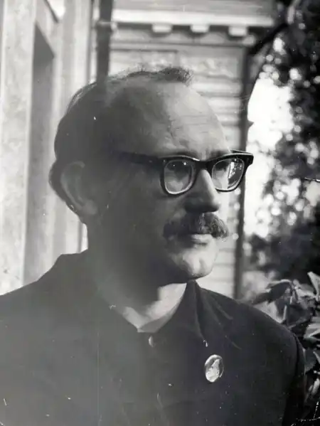
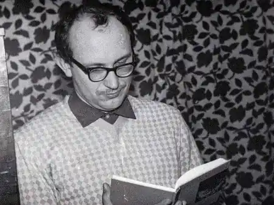
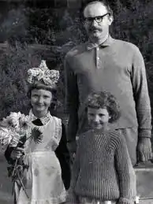

Цієї весни Станіславу Тельнюку (1935-1990 рр.) виповнилося б 69 років. І хоча це не кругла дата і здається немає приводу для написання тематичної урочистої статті, та обов’язок доньки поета і необхідність в осмисленні творчого шляху Станіслава Тельнюка, його ідейно-естетичних пошуків, спонукають до цього кроку. Тим паче, що дослідження і гарячі суперечки навколо такого складного і неоднозначного явища як міфологія шістдесятництва (а саме в цей період формувався Тельнюк як поет, публіцист, романіст, літературознавець), його еволюція, багатовимірність, неоднозначність, — тривають і дотепер.
Запекла боротьба поколінь сучасної інтелігенції відображають гостру зацікавленість освічених верств суспільства цією течією, а її герої стали "предметом" ретельних досліджень і наукових дискурсів. Варто сказати, що шістдесятництво зі сфери поточної літературної критики, газетної полеміки впевнено переходить у галузі історії суспільної думки, залишаючись все ж, фактом сьогодення. Останні 40 років про шістдесятництво говорять багато і різне: з ностальгією, з насмішкою, з роздратуванням, захопленням, вдячністю. Якою була правдива картина інтелектуальних і культурних пошуків 60-х? Чи існує єдино правильне рішення? І наскільки ця тема є взагалі дозволеною, зручною? Кому випаде честь стати канонізованим класиком, а кого історія відкине на маргінес? Чи можливо писати про той трагічний і драматичний час максимально уникаючи фальшивості, літературних і культурних ярликів, бути критичним і навіть іронічним? Багатьох свідків дієї доби було фізично і морально знищено, багатьох забуто або, в кращому випадку, включено до "другого ряду" загальнонаціональної класики (їхнім творам не випало потрапити до шкільних програм, списків рекомендованої літератури, тощо). Це породило масу комплексів та образ, нерозуміння, невігластва, засудження одних і піднесення на щит інших. Спробуємо оживити долю Станіслава Тельнюка, адже був він одним з них, він був шістдесятником. Станіслав Тельнюк — поет, перекладач, прозаїк, літературознавець, критик. Його активна діяльність охоплювала мало не усі напрямки літературного процесу на Україні. І тому творчу спадщину Станіслава Тельнюка важко втиснути в задані рамки. Він перекладав з 15 мов, видав 8 поетичних збірок, був автором багатьох повістей та оповідань, історичних романів, роману-есе, літературно-критичних нарисів, документальних повістей-репортажів, біографічних повістей, сотень статей тощо. Його вірші та оповідання перекладалися російською, білоруською, грузинською, вірменською, молдавською, кримськотатарською, польською, болгарською, португальською, арабською мовами. Станіслав Тельнюк жив і творив у хрущовсько-брежнєвську добу — знаковий період української історії — відтак був її учасником і жертвою. Типовий шістдесятник і, водночас, неординарна і різнобічно обдарована особистість, Тельнюк виплекав свою власну формулу любові до України, свій власний спосіб служіння українській літературі. Опір провінційності та хуторянству, просвітництво, гранична порядність, високий професійний стандарт — ось із яких компонентів складалося його життєве кредо, його творча місія. Творчість Станіслава Тельнюка — поки що непрочитана сторінка української літератури другої половини ХХ століття і потребує ретельного дослідження. Якою ж була моральна і світоглядна позиції Станіслава Тельнюка та його колег по перу? Як більшість його друзів та колег він "жив так, тому що — вірив". Вірив у все те, що було "по-українськи", або про "українське". "Нація, по суті, була етнічною... Метою національно-визвольного руху є створення власної, тобто національної держави". (Бадзьо Ю. Національна ідея і національне питання// К., 2000. с. 16-17). Але тоді про це, якщо і говорили, то лише одиниці. Більшість громадян ставилася досить лояльно до політичної концепції псевдодержави УРСР. Культурне, мовне, етнічне самовизначення — ось що було головним і першочерговим. Наївно сподіваючись на те, що політичне самовизначення прийде одразу вслід за культурним та етнічним. Це була доба нового міфотворення і гарячкового пошуку сурогату релігії, справжньої героїчної трагедії і водночас гіркої пародії на неї. Позиція переважної більшості представників тієї генерації стосовно влади була ліберальною — вони визнавали соціалізм як законний лад в країні, критикуючи недоліки: сталінізм, партійну бюрократію, відсутність громадянських свобод, придушення національного розвитку. Очищений від цих недоліків соціалізм — цілком влаштовував. Шляхи і способи вирішення шістдесятниками названих проблем були різними: гуманна перебудова суспільно-політичного життя, втішення мистецтвом, творчою працею, повернення до народної традиції, старовини, злиття з природою. Початок 60-их... Короткий "вегетаріанський" період в історії української літератури. Національно-свідома інтелігенція зачитується віршами молодого Івана Драча, Ліни Костенко, Василя Симоненка, Василя Стуса... Тоді Станіслав Тельнюк — автор поетичних збірок "Легенда про будні" (1963 р.) та "Залізняки" (1966 р.), перспективний критик і літературознавець і напише свої знамениті "підпільні" вірші, саркастично-жорстокий "Забувайте українську мову" та сповнену трагічної іронії "Веселу пісеньку останнього гурона" — автор декламував їх біля пам’ятника Шевченку, їх поширювали у самвидаві, читали зарубіжні "радіоголоси"... Хочу я гукнути знову й знову, Закричати, скільки сили стане: Забувайте українську мову, Не гайнуйте часу, громадяни! Бо ж вона теперечки не модна, Бо ж її тепер ніде не знають, І її лиш дурні великодні В селах ще подекуди вживають. То ж тепер усі давайте чисто Здійснювать "святу" оту ідею. Бо у нас лиш націоналісти Розмовляють мовою своєю. Та й вони забилися в куточки, І прогресу їм не перешкодить. Всі синки начальницькі і дочки Тільки ж — бач! — в російські школи ходять. То ж під наш усі ставайте прапор, Забувайте мовні забобони, Бо ми всі на даному етапі — Лиш десяток економрайонів! 1963 р. (Тельнюк С. Вірші з шухляди// Україна. 1988.52). Та "хрущовська відлига" набувала свого загрозливого призахідного кольору: в серпні 1968 року радянські війська вторглися в Чехословаччину. Попереду — справжні безжальні розправи. Саме в цей час С.Тельнюк пише у своєму щоденнику: "Мораль одна: письменник говорить з вічністю. Він не може не написати того, що не дає йому жити. Він писатиме про це всупереч забороні. І якщо його рукопис не пройде у видавництві, письменник покладе його у стіл і чекатиме "дірки в епосі", щоб твір його хоч через двадцять літ, а був надрукований". (С.Тельнюк "Неодцвітаюча весно моя..."// К., 1991). Він намагається працювати і ховається в каторжній праці літературознавця-дослідника. Саме після знайомства з Павлом Тичиною, котрий удостоїв молодого літератора своєї дружби, довіри і мистецького менторства, Станіслав Тельнюк зробив свій вибір служити українській літературі, бути її чорноробом. Це не було сліпотою чи надмірною залюбленістю, навпаки, своєю працею дослідника він доводив, що засудження часто приходить від недбалого невігластва, від невміння бачити не лише крізь призму "совкових догм", а очима, коли не абсолютно вільної людини, то, принаймні, обізнаної. "Ми приречені до однозначності соціалістичного реалізму, не розуміли, що справжня література має подвійне та потрійне дно, а під третім дном може бути ще й четверте й п’яте". (Тельнюк С. Містифікація генія в тоталітарному пеклі // К., 1991). І він прагнув знати і відкривати читачеві оті безмежні літературні глибини, прагнув "реабілітувати" Тичину, видавати в друк його справжню, "аутентичну" поезію. 1972-1973 роки позначені як період виняткової активізації політичних репресій на Україні. Творча діяльність усіх нерегламентованих партією форм діяльності була фактично унеможливлена: одних фізично нищили, інших доводили до божевілля, чавили, принижували, примушували блазнювати, ставили у рамки єдино-сильного кадебіського "табу". Не оминуло лихо й Тельнюка: "... до 1-ї год. Допитував мене про Стуса (слідчий Логвинов — Г.Т.). Все намагався витягти з мене політичні звинувачення на адресу Стусового памфлету про Тичину. Я сказав, що то літературознавча праця. Так і записали." (Щоденники. Серпень. 1972 р. Рукопис). У вересні 1972 він виступає на суді як свідок у справі В.Стуса: "під час обшуку у СТУСА було вилучено листа СТАНІСЛАВА ТЕЛЬНЮКА, спеціаліста з творчості Тичини, у якого СТУС консультувався під час роботи над статтею... ТЕЛЬНЮК на суді дав позитивний відгук про роботу СТУСА... Суд ігнорував відгук ТЕЛЬНЮКА. Робота С.ТЕЛЬНЮКА про Тичину, що знаходиться в московському видавництві не друкується. Заступник голови правління Спілки письменників УРСР ВАСИЛЬ КОЗАЧЕНКО заявив: "Нехай ТЕЛЬНЮК розрахується з КДБ, тоді будемо його друкувати". ТЕЛЬНЮК також допитується в якості свідка у справі НАДІЇ СВІТЛИЧНОЇ, ІВАНА ДЗЮБИ, ЄВГЕНА СВЕРСТЮКА, ІВАНА СВІТЛИЧНОГО". (ХРОНІКА ПОТОЧНИХ ПОДІЙ, вип. 27, 15 жовтня 1972 р. — переклад Г.Т.). За свою відмову співпрацювати з "органами" Тельнюк опиняється у "чорному списку" секретаря ЦК В.Маланчука — разом із І.Драчем, М.Вінграновським, В.Некрасовим, І.Дзюбою та іншими київськими літераторами. Його фактично заборонено друкувати. "О, чорний чорний високосний рік! Коричневий 72-й роче! О, як ти чорно дивишся ув очі. Я чую крик! Я чую залпів рик!" (Щоденники. 5.VІІІ. 1972. Рукопис). Доведений до нервового розладу Тельнюк все ж сподівається бути почутим. "Доробляв варіант книжки (книжка про Тичину, що саме готувалася до друку в Москві — Г.Т.). Їздив у Москву, був на вечорі Чуковського, познайомився з редактором (Н.Масуренкова — Г.Т.). Каже: — Все, де лається Сталін, викидають. Усе повертається на старе. Ай, так багато страшного!" (Щоденники. 20.V.1972 р. Рукопис). Нарешті 1974 року в Москві — у видавництві "Художественная литература" виходить згадана книжка "Павло Тичина".